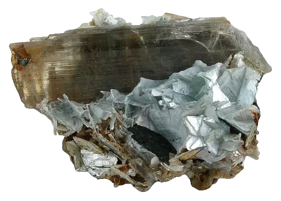

Mineral Grimoire
 Diaspore
Diaspore
Appearance
Translucent layered raw crystal, or faceted gemstone that changes colour.
Origin
Turkey (gem quality), Russia, New Zealand, United States, Brazil, Argentina, UK, China
Attributes
One of the rarest gemstones, high vibration Diaspore (gem quality sold as Zultanite) opens the crown and higher crown chakras and grounds high vibration energy to earth. The raw stone is used for metaphysical and healing work. Placing this stone on the forehead promotes lucid dreaming and enhances metaphysical abilities. It is useful if you psychically read for others as it enhances your connection. The colour comes from manganese which absorbs the ultra-violet spectrum and appears different when viewed from two directions. You literally see things in a different light with this stone.
An important physiological constituent with a powerful antioxidant and metabolic function, manganese is required for correct bone development, tissue repair and assimilation of minerals within the body. Correct balance of manganese is essential and Diaspore delivers an energetic boost or sedates as required.
Healing
Diaspore is reputed to assist the body to maintain the correct acid-alkaline balance and to remove free radicals and toxins or pollutants. It energetically releases water retention, promoting weight loss and body reshaping. In crystal healing Diaspore is used for Parkinson's disease, for stimulating the production of T-cells in the immune system, and encouraging wound healing and correct bone development.
Position
Wear, grid, hold or disperse gem essence around the aura as appropriate.